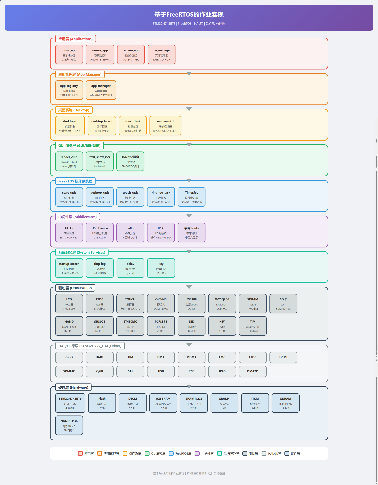
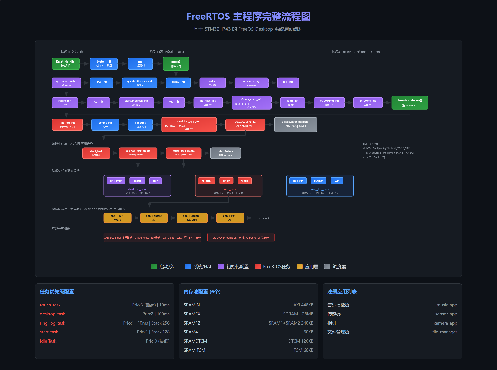
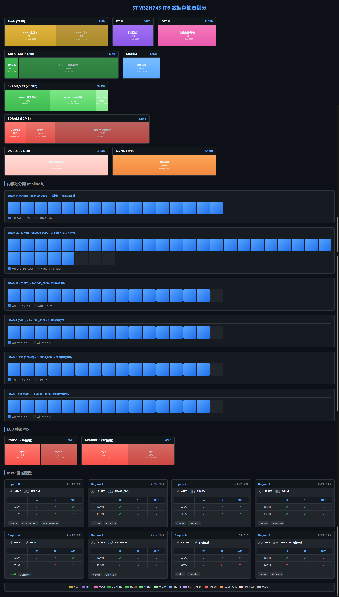
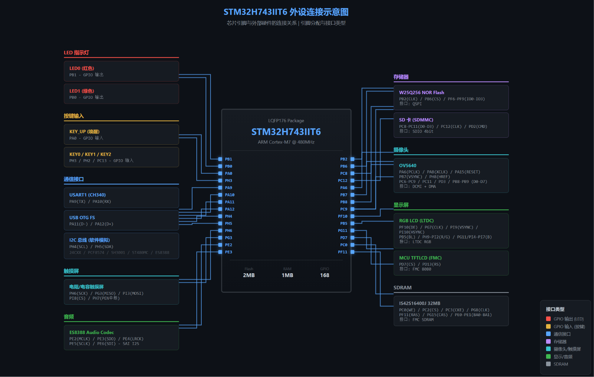
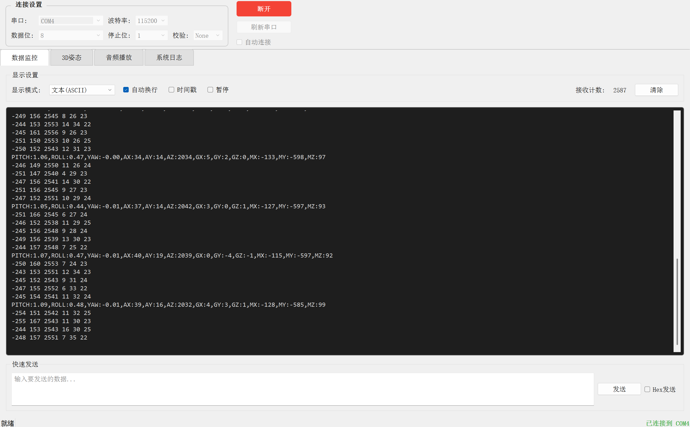
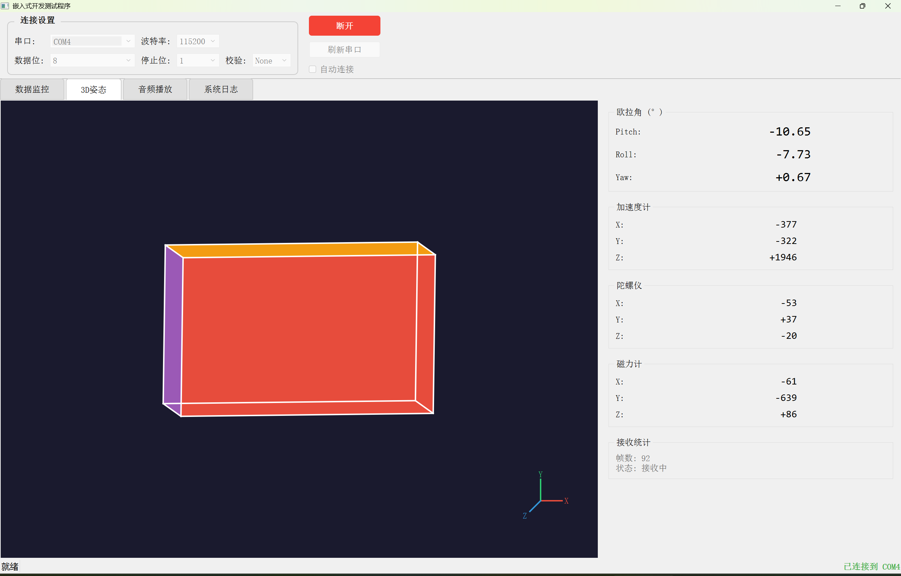

FreeOS Desktop
基于 FreeRTOS 的嵌入式桌面操作系统
系统架构与实现演示
软件架构

主程序流程

中断处理机制

存储器管理

硬件连接

上位机演示 (1)

上位机演示 (2)

技术特点
🎯 实时性
基于 FreeRTOS 实时内核
📐 模块化
分层架构，易于扩展
🔧 可移植
硬件抽象层设计
💻 可视化
上位机调试支持
应用场景
🏭
工业控制
HMI 人机界面
📱
智能终端
嵌入式设备
🔬
仪器仪表
测试测量设备
感谢观看
FreeOS Desktop
基于 FreeRTOS 的嵌入式桌面操作系统
详细文档请访问项目主页